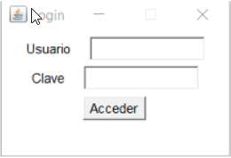
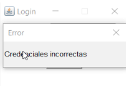

La primera ventana que aparece al ejecutar el programa es la ventana de login. Aquí deberá introducir sus credenciales y pulsar el botón 'Acceder'. En el campo de texto superior debe introducir su nombre de usuario y en el inferior, la clave. Si las credenciales son erróneas, aparecerá una ventana de aviso.
 